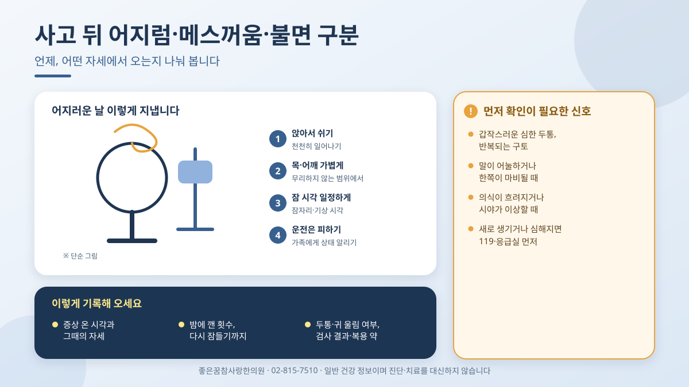

이종호 한의사 감수좋은꿈참사랑한의원 대표원장 (한의사 면허번호 19769)발행 2026-11-22 · 수정 2026-11-26
이 글의 차례
- 왜 이런 불편이 생길 수 있나요
- 세 가지를 나눠 보면 이렇게 다릅니다
- 먼저 이렇게 여쭙니다
- 일상에서 먼저 해 볼 수 있는 것
- 상황별 예시
- 스스로 점검해 보세요
- 어지럼의 모양을 말로 옮겨 보면 어떻게 될까요?
- 왜 놀란 마음이 속과 잠에 먼저 드러날까요
- 사고 뒤 저녁은 이렇게 보내 보세요
- 하루 기록은 세 칸으로 나눠 적어 보세요
- 메스꺼울 때 식사는 어떻게 할까요?
- 낮 동안 몸의 긴장을 풀어 주는 방법
- 화면과 소리 자극은 어떻게 줄일까요?
- 가족이 곁에서 살펴 주면 좋은 것
- 사고 뒤 일상으로 돌아갈 때는 어떻게 할까요?
- 증상이 하루 사이에도 오르내리는 이유는?
- 불안 때문에 잠이 안 올 때 침실에서 할 수 있는 것
- 한의원에서 함께 살필 수 있는 경우
- 이렇게 기록해 오시면 상담이 쉬워집니다
- 얼마나 지켜보고 언제 상담할까요
- 이런 증상은 먼저 확인이 필요합니다
- 관련 글
사고 뒤 어지럼과 메스꺼움, 잠 문제는 한 덩어리로 보기보다 언제, 어떤 자세에서 오는지 나눠 적어 보는 것이 첫걸음입니다. 사고 뒤에는 목과 어깨의 긴장, 놀란 마음, 수면 리듬의 변화가 한꺼번에 오기 쉽습니다. 증상이 비슷해 보여도 어떤 때 오는지를 구분하면 살필 방향이 달라집니다.
다만 사고 때 머리를 부딪혔거나 두통·구토가 점점 심해진다면, 기록하며 지켜보기보다 가까운 응급실에서 먼저 확인을 받으세요.
왜 이런 불편이 생길 수 있나요
- 사고 때 목과 어깨 근육이 갑자기 긴장하면 고개를 돌리거나 일어설 때 어지럽고 머리가 무거울 수 있습니다.
- 놀란 마음이 가라앉지 않으면 속이 메스껍고 입맛이 떨어지며, 작은 소리에도 깜짝 놀라 잠이 얕아지기도 합니다.
- 통증 때문에 자세를 바꾸기 어려우면 밤에 자주 깨고, 낮의 피로가 어지럼을 더 크게 느끼게 할 수 있습니다.
- 머리를 부딪혔거나 증상이 점점 심해진다면 다른 원인을 먼저 확인해야 합니다.
세 가지를 나눠 보면 이렇게 다릅니다
- 고개를 돌리거나 일어설 때 어지럽고 뒷목이 뻣뻣하다면 목과 어깨의 긴장 쪽을 먼저 살핍니다.
- 차를 타거나 사고 장면이 떠오를 때 속이 메스껍고 가슴이 두근거린다면 놀란 마음과 긴장 쪽을 함께 봅니다.
- 통증 때문에 뒤척이다 깨고 낮에 피곤해 어지럼이 더 크게 느껴진다면 잠과 생활 리듬 쪽을 먼저 살핍니다.
- 가만히 있어도 빙빙 도는 어지럼, 점점 심해지는 두통, 반복되는 구토는 위 세 가지와 달리 한의원 진료를 기다리지 말고 가까운 응급실에서 먼저 확인해야 하는 신호입니다.
먼저 이렇게 여쭙니다
- 어지럼은 일어설 때, 고개를 돌릴 때, 가만히 있을 때 중 언제 오나요?
- 메스꺼움은 식사 뒤, 차를 탈 때, 두통이 있을 때 가운데 언제 오나요?
- 잠들기가 어려운가요, 자다 깨는 건가요?
- 사고 장면이 떠올라 놀라거나 불안한가요?
- 사고 때 머리를 부딪히거나 정신을 잃은 순간이 있었나요?
- 사고 뒤 입맛과 식사량은 어떻게 달라졌나요?
- 낮에 졸리거나 멍한 시간이 늘었나요?
일상에서 먼저 해 볼 수 있는 것
- 어지러울 때는 앉아서 쉬고 천천히 일어나기
- 목과 어깨는 무리하지 않는 범위에서 가볍게 풀기
- 잠자리 시각과 기상 시각을 일정하게 두기
- 증상이 나타난 시각과 상황을 간단히 기록해 두기
- 어지러운 날에는 운전이나 높은 곳에서 하는 일을 피하고 가족에게 상태를 알려 두기
- 잠자리에 들기 전 휴대전화로 사고 관련 글이나 영상을 찾아보지 않기
- 식사량이 줄었다면 조금씩 자주 나눠 먹고 물을 챙겨 마시기
- 낮에 짧게라도 밖에 나가 햇빛을 보며 천천히 걷기
상황별 예시
- 예를 들어 사무직 직장인이 사고 뒤 모니터를 보다 고개를 돌릴 때마다 핑 도는 느낌이 든다면, 그 시각과 고개를 돌린 방향을 적고 화면을 눈높이로 옮겨 고개를 크게 돌리는 일을 줄여 봅니다.
- 예를 들어 수험생이 사고 뒤 밤마다 장면이 떠올라 잠들기까지 한참 걸린다면, 잠자리에 드는 시각과 일어나는 시각을 일정하게 두고, 잠들기 전 휴대전화로 사고 관련 영상이나 글을 찾아보는 일을 잠시 멈춰 봅니다.
- 예를 들어 어르신이 사고 뒤 입맛이 떨어지고 아침에 일어설 때 어지럽다고 하신다면, 일어나기 전 침대에 잠시 앉아 있다 천천히 일어나시도록 하고, 식사량과 물 마신 양을 가족이 함께 적어 두면 좋습니다.
스스로 점검해 보세요
- 어지럼이 어떤 자세에서 오는지 적어 두었나요?
- 메스꺼움이 식사, 차 타기, 두통 가운데 무엇과 함께 오는지 적어 두었나요?
- 잠들기까지 30분 넘게 걸리는 밤이 일주일에 며칠인가요?
- 밤에 깨는 횟수가 사고 전보다 늘었나요?
- 작은 소리나 차 소리에 깜짝 놀라는 일이 잦아졌나요?
- 사고 뒤 입맛이나 식사량이 눈에 띄게 줄었나요?
- 사고 때 머리를 부딪혔거나 기억이 끊긴 순간이 있었나요?
어지럼의 모양을 말로 옮겨 보면 어떻게 될까요?
어지럽다는 말 안에는 여러 느낌이 섞여 있습니다. 눈앞이 아찔하고 핑 도는 느낌, 몸이 붕 떠 있거나 배 위에 있는 듯 흔들리는 느낌, 걸을 때 중심이 한쪽으로 쏠리는 느낌은 서로 다르게 살핍니다.
일어설 때 잠깐 아찔했다가 몇 초 만에 가라앉는다면 자세가 바뀔 때의 혈액 흐름이나 피로와 이어지는 경우가 있습니다. 고개를 돌리거나 젖힐 때 뒷목 뻣뻣함과 함께 머리가 무겁고 흔들린다면 목과 어깨 긴장 쪽을 먼저 봅니다.
누워서 돌아눕거나 고개를 숙일 때만 짧게 빙 도는 느낌이 왔다가 사라진다면 귀 안쪽 균형 기관 쪽 문제일 수도 있어, 이런 모양도 따로 적어 두시면 진료실에서 구분하기가 쉽습니다.
왜 놀란 마음이 속과 잠에 먼저 드러날까요
사고 순간 몸은 위험에 대비하는 긴장 상태로 들어가고, 이 긴장은 사고가 끝난 뒤에도 한동안 쉽게 풀리지 않습니다. 긴장이 이어지는 동안에는 소화보다 버티는 쪽에 힘이 쏠려 입맛이 떨어지고 속이 메스꺼울 수 있습니다.
잠도 마찬가지입니다. 몸이 경계를 풀지 못하면 잠들기가 어렵고, 작은 소리에 깨거나 꿈에서 사고 장면을 다시 보는 일이 생기기도 합니다. 낮에는 괜찮다가 밤이 되면 불편이 커지는 분이 많은 까닭입니다.
그래서 메스꺼움과 잠 문제는 위장이나 수면만 따로 보기보다, 사고 뒤 몸의 긴장이 얼마나 남아 있는지와 함께 살피는 것이 실마리가 되는 경우가 많습니다.
사고 뒤 저녁은 이렇게 보내 보세요
- 저녁 식사는 잠들기 3시간 전쯤 가볍게 마치고, 메스꺼운 날에는 죽처럼 부드러운 음식을 조금씩 나눠 먹습니다.
- 잠들기 1시간 전부터는 사고 관련 통화나 서류 정리, 영상 확인을 멈추고 조명을 낮춥니다.
- 미지근한 물로 샤워해 목과 어깨를 데우고, 아프지 않은 범위에서 어깨를 천천히 돌려 줍니다.
- 누워서 4초 들이쉬고 6초 내쉬는 호흡을 몇 번 하며 몸의 힘이 빠지는 느낌에 주의를 둡니다.
- 20분이 넘도록 잠이 오지 않으면 잠깐 일어나 어두운 곳에 앉아 있다가 졸릴 때 다시 눕습니다.
- 통증 때문에 자세 잡기가 어렵다면 옆으로 누워 무릎 사이에 베개를 끼우거나, 바로 누워 무릎 아래에 베개를 받쳐 봅니다.
하루 기록은 세 칸으로 나눠 적어 보세요
수첩을 세 칸으로 나눠 어지럼, 메스꺼움, 잠을 따로 적습니다. 어지럼 칸에는 시각과 자세, 느낌의 모양을, 메스꺼움 칸에는 식사·차 타기·두통 가운데 무엇과 함께 왔는지를 적습니다.
잠 칸에는 누운 시각, 잠든 것 같은 시각, 깬 횟수, 아침에 개운한 정도를 0~10점으로 적습니다. 세 칸이 같은 날 함께 나빠지는지, 따로 움직이는지를 보면 어디부터 살필지가 드러납니다.
메스꺼울 때 식사는 어떻게 할까요?
속이 메스꺼울 때는 한 번에 많이 먹기보다 조금씩 자주 먹는 쪽이 편한 경우가 많습니다. 죽, 미음, 데운 두부처럼 부드럽고 기름기가 적은 음식부터 시작해 보세요.
차갑거나 맵고 기름진 음식, 냄새가 강한 음식은 메스꺼움을 키울 수 있습니다. 물은 한꺼번에 들이켜기보다 미지근한 물을 조금씩 자주 마십니다.
식사량이 크게 줄었다면 무엇을 얼마나 먹었는지 하루 단위로 적어 두세요. 며칠 사이 조금씩 회복되는지, 그대로인지를 진료 때 함께 보기 좋습니다.
낮 동안 몸의 긴장을 풀어 주는 방법
사고 뒤에는 자신도 모르게 어깨를 올리고 이를 꽉 문 채 지내는 경우가 많습니다. 한 시간에 한 번쯤 어깨에 힘이 들어가 있는지 확인하고, 숨을 길게 내쉬며 어깨를 아래로 내려 주세요.
햇빛이 드는 시간에 10~20분 가볍게 걷는 것도 밤잠을 돕는 데 보탬이 됩니다. 어지럼이 있는 날에는 혼자 멀리 가지 말고 가까운 곳을 천천히, 누군가와 함께 걸어 보세요.
낮잠은 짧게, 이른 오후에만 잡니다. 밤잠이 모자라다고 낮에 오래 자면 밤에 다시 잠들기 어려워지는 순환이 생길 수 있습니다.
화면과 소리 자극은 어떻게 줄일까요?
사고 뒤 어지럼이나 메스꺼움이 있을 때 휴대전화 화면을 오래 보거나 빠르게 넘기는 영상을 보면 불편이 커지는 분이 있습니다. 화면은 짧게 나눠 보고, 글자를 키워 눈에 힘이 덜 들게 해 보세요.
시끄러운 곳이나 사람이 많은 곳에서 머리가 무겁고 예민해진다면, 회복하는 동안은 조용한 곳에서 쉬는 시간을 늘립니다. 잠자리에서는 텔레비전이나 휴대전화를 끄고 방을 어둡게 해 몸이 쉴 수 있는 환경을 만들어 주세요.
가족이 곁에서 살펴 주면 좋은 것
본인은 괜찮다고 해도 말수가 줄거나 식사량이 줄고, 밤에 자주 깨는 모습은 곁에 있는 가족이 먼저 알아차리는 경우가 많습니다. 이런 변화를 날짜와 함께 적어 두었다가 진료 때 함께 전해 주시면 도움이 됩니다.
어지럼이 있는 동안에는 욕실이나 계단에서 넘어지지 않도록 가족이 곁을 지켜 주시고, 어르신이라면 밤에 화장실 가는 길에 작은 조명을 켜 두세요.
사고 뒤 일상으로 돌아갈 때는 어떻게 할까요?
어지럼과 잠의 흔들림이 조금씩 가라앉으면 일과 공부를 다시 시작하게 됩니다. 처음부터 평소만큼 하려 하기보다 하루 일정의 절반 정도로 시작해, 며칠 사이 불편이 다시 커지지 않는지 보며 늘려 가세요.
긴 시간 화면을 보거나 운전을 해야 하는 일이라면 중간에 쉬는 시간을 일부러 넣어 둡니다. 다시 시작한 뒤 어지럼이나 메스꺼움이 되살아나는 날이 있으면 그날 무엇을 했는지 함께 적어 두면, 진료 때 일정 조절을 함께 이야기하기 쉽습니다.
증상이 하루 사이에도 오르내리는 이유는?
사고 뒤 어지럼과 메스꺼움은 아침에는 괜찮다가 오후에 심해지거나, 잠을 설친 다음 날 유독 커지는 식으로 하루 사이에도 오르내리는 경우가 많습니다. 피로와 긴장이 쌓이는 정도에 따라 같은 몸도 다르게 반응하기 때문입니다.
그래서 하루 한 번만 적기보다 아침과 저녁 두 번 짧게 적어 두면, 어느 때 불편이 커지는지 흐름이 더 잘 보입니다.
불안 때문에 잠이 안 올 때 침실에서 할 수 있는 것
누운 자리에서 사고 장면이 떠오르면 억지로 지우려 하기보다, 방 안에서 보이는 것 다섯 가지, 들리는 소리 세 가지를 천천히 세어 보세요. 주의를 지금 이 자리로 데려오는 방법입니다.
이불의 무게, 베개에 닿는 뒷머리의 느낌처럼 몸이 닿아 있는 곳에 주의를 두는 것도 도움이 될 수 있습니다. 그래도 마음이 가라앉지 않으면 일어나 조용한 곳에서 따뜻한 물을 조금 마신 뒤 다시 누워 보세요.
한의원에서 함께 살필 수 있는 경우
- 사고 뒤 어지럽고 속이 메스꺼운 경우 목과 균형 감각을 함께 살핍니다.
- 소리에 예민하고 잠이 얕은 경우 긴장과 수면을 함께 살핍니다.
- 몸이 흔들리는 느낌이 있는 경우 자세와 근육의 긴장을 함께 살핍니다.
좋은꿈참사랑한의원에서는 첫 방문 때 사고 경위와 어지럼·메스꺼움·잠의 변화가 시작된 때를 먼저 충분히 듣습니다. 이어서 모든 분께 맥을 짚고, 필요하다고 판단될 때 혀와 배를 살펴 소화와 긴장 상태를 봅니다. 목과 어깨의 움직임과 누르는 반응을 확인하고, 필요하면 초음파로 근육을 살피며, 위험 신호가 의심되면 의과 검사를 먼저 안내합니다.
그다음 상태에 맞춰 침·약침·추나 등 방향을 정하고 그 이유를 설명해 드리며, 귀가 전에는 집에서 지켜볼 점을 알려 드립니다. 다음에 오시면 지난 이야기를 이어서 여쭙고 기록을 함께 비교합니다.
이렇게 기록해 오시면 상담이 쉬워집니다
- 어지럼·메스꺼움이 온 시각과 그때의 자세(일어설 때, 고개 돌릴 때 등)
- 밤에 깬 횟수와 다시 잠들기까지 걸린 시간
- 두통이나 귀 울림 같은 다른 증상이 함께 있었는지
- 병원에서 받은 검사 결과와 복용 중인 약
- 하루 식사량과 물 마신 양의 대략적인 변화
- 아침과 저녁 가운데 불편이 더 큰 때
얼마나 지켜보고 언제 상담할까요
- 가벼운 어지럼과 잠의 흔들림은 사고 뒤 며칠 사이 나타났다가 차츰 가라앉기도 합니다. 그래도 사고 뒤 어지럼이나 메스꺼움이 생겼다면 한 번은 의료기관에서 상태를 확인해 두고, 처음 1주 정도는 시각과 상황을 기록하며 지켜봅니다.
- 1~2주가 지나도 어지럼이 줄지 않거나, 메스꺼움 때문에 식사를 제대로 못 하는 날이 이어지면 상담을 받아 보세요.
- 잠들기 어렵거나 자주 깨는 밤이 2주 넘게 이어져 낮 생활이 힘들다면 몸과 마음의 긴장을 함께 살펴볼 때입니다.
- 사고 장면이 계속 떠올라 일상이 어렵거나, 마음이 너무 힘들어 스스로를 해칠 생각이 든다면 혼자 견디지 말고 ☎ 109에 바로 도움을 청하세요.
- 아래 신호가 있으면 지켜보지 말고 가까운 응급실로 가세요.
이런 증상은 먼저 확인이 필요합니다
- 갑작스럽게 심한 두통이 오거나 두통이 점점 심해지는 경우
- 구토가 반복되는 경우
이런 신호가 있으면 한의원보다 가까운 병원이나 응급실을 먼저 찾으세요.
관련 글

여쭙는 것
- 어지럼은 일어설 때, 고개를 돌릴 때, 가만히 있을 때 중 언제 오나요?
- 메스꺼움은 식사 뒤, 차를 탈 때, 두통이 있을 때 가운데 언제 오나요?
- 잠들기가 어려운가요, 자다 깨는 건가요?
생활에서 해 볼 것
- 어지러울 때는 앉아서 쉬고 천천히 일어나기
- 목과 어깨는 무리하지 않는 범위에서 가볍게 풀기
- 잠자리 시각과 기상 시각을 일정하게 두기
한의원에서 함께 살필 것
- 사고 뒤 어지럽고 속이 메스꺼운 경우 목과 균형 감각을 함께 살핍니다.
- 소리에 예민하고 잠이 얕은 경우 긴장과 수면을 함께 살핍니다.
- 몸이 흔들리는 느낌이 있는 경우 자세와 근육의 긴장을 함께 살핍니다.
먼저 확인이 필요한 신호
- 갑작스럽게 심한 두통이 오거나 두통이 점점 심해지는 경우
- 구토가 반복되는 경우
한눈에 보는 표
| 구분 | 핵심 |
|---|---|
| 여쭙는 것 | 어지럼은 일어설 때, 고개를 돌릴 때, 가만히 있을 때 중 언제 오나요? 메스꺼움은 식사 뒤, 차를 탈 때, 두통이 있을 때 가운데 언제 오나요? |
| 생활에서 해 볼 것 | 어지러울 때는 앉아서 쉬고 천천히 일어나기 목과 어깨는 무리하지 않는 범위에서 가볍게 풀기 |
| 한의원에서 함께 살필 것 | 사고 뒤 어지럽고 속이 메스꺼운 경우 목과 균형 감각을 함께 살핍니다. 소리에 예민하고 잠이 얕은 경우 긴장과 수면을 함께 살핍니다. |
| 먼저 확인이 필요한 신호 | 갑작스럽게 심한 두통이 오거나 두통이 점점 심해지는 경우 구토가 반복되는 경우 |
자주 묻는 질문
어지럼이 오래 가면 어떻게 하나요?
이유가 여러 가지라 먼저 의료기관의 확인을 받고 필요한 상담을 이어가도록 안내합니다.
불안해서 잠이 안 오는 것도 사고 후유증인가요?
놀람과 긴장이 잠에 영향을 줄 수 있어 함께 살핍니다.
기록은 왜 필요한가요?
언제 어떤 상황에서 오는지 알면 이야기를 구체적으로 나눌 수 있습니다.
어지럼이 있을 때 추나를 받아도 되나요?
어지럼의 원인을 먼저 확인하는 것이 순서라, 위험 신호가 없는지 살핀 뒤 상태에 맞는 방법을 함께 정합니다.
사고 뒤 잠이 안 와서 수면제를 먹고 있는데 진료받아도 되나요?
진료받으실 수 있습니다. 복용 중인 약은 진료 때 알려 주시고, 처방받은 약은 임의로 끊지 말고 조절이 필요하면 처방한 의사와 상의해 주세요. 잠자리 습관과 몸의 긴장을 함께 살핍니다.
차만 타면 속이 메스꺼운데 어떻게 하나요?
사고 뒤 긴장으로 그럴 수 있어, 처음에는 짧은 거리부터 다른 사람이 운전하는 차를 타 보고 창밖 먼 곳을 보며 쉬어 갑니다. 두통이나 구토가 함께 심해지면 한의원 진료를 기다리지 말고 가까운 응급실로 가세요.
어지러울 때 목 스트레칭을 해도 되나요?
어지럼이 있는 동안에는 고개를 크게 돌리거나 젖히는 동작은 피하고, 어깨를 천천히 돌리는 정도로만 해 보세요. 진찰로 원인을 살핀 뒤 맞는 동작을 함께 정합니다.
좋은꿈참사랑한의원은 재진 때 지난번 이야기부터 이어서 여쭙니다. 진료시간과 예약은 오시는 길에서 확인하세요.
어디서 상담받을 수 있나요?
좋은꿈참사랑한의원은 서울 동작구 만양로2길 2 신성빌딩 3층·5층(서울 동작구 상도동, 7호선 상도역 3번 출구 근처)에 있습니다. 한의사 3명(이종호 대표원장, 조영기 수석진료원장, 정원영 진료원장)이 진료합니다. 진료시간은 평일 09:30~20:00(점심 13:00~14:00), 토·일·공휴일 09:30~15:00이며, 방문 전 전화로 확인을 권합니다. 예약은 네이버 예약, 카카오톡 상담, 전화 02-815-7510로 받습니다.
이 글은 일반적인 건강 정보이며 개인의 진단이나 치료를 대신하지 않습니다. 증상이 있거나 복용 중인 약이 있다면 진료를 통해 확인하세요. 치료 효과는 개인마다 다를 수 있습니다.
작성 기준: 일반적으로 알려져 있는 건강 정보를 참고해 정리했습니다(대표원장 감수). 증상 기록은 1~2주 동안 하루 1회, 비슷한 시간에 적어 오시면 지난 상태와 비교하기 쉽습니다.